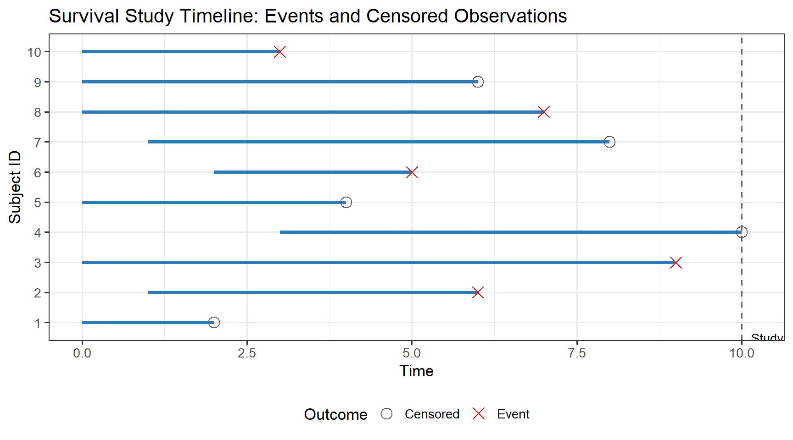

systemfonts and textshaping have been compiled with different versions of Freetype. Because of this, textshaping will not use the font cache provided by systemfonts3 Censoring and Truncation
Censoring is the defining feature of survival data. It arises whenever the exact event time is not observed for every subject — something that happens in virtually every real study. Handling censoring correctly is the central methodological challenge of survival analysis; ignoring it leads to systematically biased estimates.
3.1 Why Censoring Arises
Consider monitoring 100 insect colonies for the time until collapse. At the end of the study period:
- 68 colonies have collapsed (exact event times observed)
- 32 colonies are still active (we know only that \(T_i > t_{\text{end}}\))
For the 32 surviving colonies, simply ignoring them understates colony longevity — we are throwing away real information. Treating their observation time as an event time (i.e., pretending they collapsed at \(t_{\text{end}}\)) overestimates mortality. Censoring methods allow us to use the partial information correctly.
3.2 Types of Censoring
3.2.1 Right Censoring (Most Common)
The event time \(T_i\) exceeds the observation time \(C_i\). We observe:
\[\tilde{T}_i = \min(T_i, C_i), \qquad \delta_i = I(T_i \leq C_i)\]
where \(\delta_i = 1\) if the event is observed, \(\delta_i = 0\) if censored.
Sub-types:
| Type | Mechanism | Example |
|---|---|---|
| Type I | Study ends at fixed time \(c\) | Field trial terminated at harvest |
| Type II | Study ends after \(r\) events | Accelerated life test: stop at 10th failure |
| Random | Censoring time \(C_i\) is random, independent of \(T_i\) | Loss to follow-up; competing event |
3.2.2 Left Censoring
The event occurred before observation began. We know only \(T_i < t_0\).
Example: A plant found to be already infested at first inspection — infestation time is left-censored at the inspection date.
3.2.3 Interval Censoring
We know only that \(L_i < T_i \leq R_i\) — the event occurred in a known interval.
Example: Trees inspected weekly; disease detected at week 5 means onset was between weeks 4 and 5. (Covered in detail in Unit V.)
3.2.4 Left Truncation (Delayed Entry)
A subject is only eligible for the study after surviving to some entry time \(t_0\). Any failure before \(t_0\) is unobservable — the subject would not have been recruited.
Example: A retrospective study of crop lifespans: trees less than 5 years old are excluded. All included trees have already survived 5 years.
Informative vs Non-Informative Censoring
The standard analysis assumes non-informative (independent) censoring: the censoring time \(C_i\) is independent of the failure time \(T_i\) given any covariates. If patients who feel sicker are more likely to drop out, censoring is informative and standard methods are biased. This assumption must always be assessed in practice.
3.3 The Censored Data Likelihood
With right censoring, the correct likelihood contribution for each subject is:
\[L_i(\theta) = \begin{cases} f(t_i;\theta) & \text{if } \delta_i = 1 \text{ (event observed)} \\ S(t_i;\theta) & \text{if } \delta_i = 0 \text{ (censored)} \end{cases}\]
Combined: \(L_i(\theta) = [f(t_i;\theta)]^{\delta_i} [S(t_i;\theta)]^{1-\delta_i} = [h(t_i;\theta)]^{\delta_i} S(t_i;\theta)\)
The full likelihood is \(L(\theta) = \prod_{i=1}^n L_i(\theta)\).
set.seed(42)
n <- 10
df_cens <- data.frame(
id = factor(n:1),
start = c(0,0,0,1,2,0,3,0,1,0),
end = c(3,6,7,8,5,4,10,9,6,2),
status = c("Event","Censored","Event","Censored","Event",
"Censored","Censored","Event","Event","Censored")
)
ggplot(df_cens, aes(y = id)) +
geom_segment(aes(x = start, xend = end, yend = id),
linewidth = 1.3, colour = "#2C7BB6") +
geom_point(aes(x = end, colour = status, shape = status), size = 4) +
geom_vline(xintercept = 10, linetype = "dashed", colour = "grey40") +
scale_colour_manual(values = c("Event" = "#D7191C","Censored" = "#636363")) +
scale_shape_manual(values = c("Event" = 4, "Censored" = 1)) +
annotate("text", x = 10.15, y = 0.5, label = "Study end", hjust = 0, size = 3.5) +
labs(title = "Survival Study Timeline: Events and Censored Observations",
x = "Time", y = "Subject ID",
colour = "Outcome", shape = "Outcome") +
theme(legend.position = "bottom")
3.4 Creating Survival Objects in R
The survival package represents censored data with a Surv object. For right-censored data:
library(survival)
# Simulate 15 observations: failure times and censoring indicators
set.seed(101)
time <- round(rexp(15, rate = 0.1), 1) # true failure times
censor <- runif(15, 3, 12) # censoring times
obs_t <- pmin(time, censor) # observed time
delta <- as.integer(time <= censor) # event indicator
# Create Surv object
surv_obj <- Surv(time = obs_t, event = delta)
print(surv_obj) # '+' marks censored observations [1] 6.810124+ 5.888860+ 4.200000 3.200000 7.709800+ 4.900000 3.200000
[8] 6.400000 3.181505+ 4.000000 1.500000 0.500000 9.846205+ 5.996652+
[15] 3.200000
Reading Surv Output
In the printed Surv object, a + after a time value means the observation is right-censored — the event had not yet occurred at that time. Exact event times appear without any suffix.
3.5 Representing the Three Common Censoring Types in R
# Right censoring (standard)
s_right <- Surv(time = obs_t, event = delta, type = "right")
# Left censoring: event known to have occurred before observation time
# event = 1 when time is LEFT-censored (event already happened)
left_t <- c(2, 5, 3, 8, 4)
left_event <- c(1, 0, 1, 0, 1) # 1 = left-censored, 0 = observed
s_left <- Surv(time = left_t, event = left_event, type = "left")
# Interval censoring: lower and upper bounds
lower_t <- c(1, 3, 2, 5, 4)
upper_t <- c(3, 6, 4, 8, 7)
s_interval <- Surv(time = lower_t, time2 = upper_t, type = "interval2")
cat("Right-censored:\n"); print(s_right[1:6])Right-censored:[1] 6.810124+ 5.888860+ 4.200000 3.200000 7.709800+ 4.900000 cat("\nLeft-censored:\n"); print(s_left)
Left-censored:[1] 2 5- 3 8- 4 cat("\nInterval-censored:\n"); print(s_interval)
Interval-censored:[1] [1, 3] [3, 6] [2, 4] [5, 8] [4, 7]
Quotes to Inspire
“The most important questions of life are indeed, for the most part, really only problems of probability.”
— Pierre-Simon Laplace